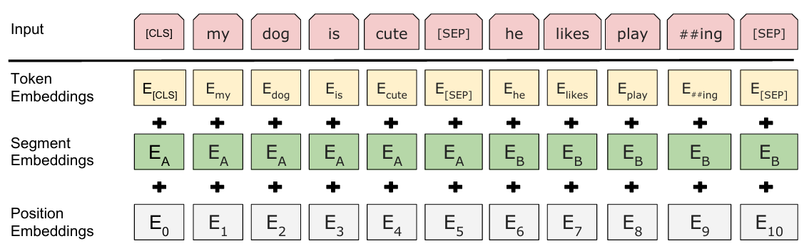
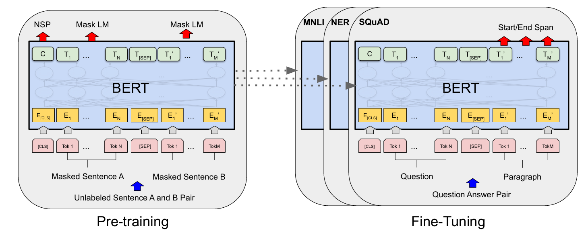

Bert
网络结构
多层transformer的encoder堆叠组成，Base Bert由12层encoder组成
Bert的embedding由三个部分组成：Token Embeddings+Segment Embeddings+Position Embeddings：
- Token Embeddings：将句子划分为token后进行embedding
- Segement Embeddings：使用数字对token所属句子进行标记，而后进行embedding
- Position Embeddings：按照token的顺序分配位置id（此处与transformer不一样），而后进行embedding
- 三者相加作为Bert的input
- [seq]和[cls]
septoken代表着句子之间的分割，为预训练中的NSP任务服务（但是个人理解实际上segment embedding和position embedding和该token没有任何关系，训练上就是当成了普通的token进行训练）clstoken在一定程度上反应输入句子的特征，可作为全局信息的聚合，可以为NSP和一些下游任务服务。网上说因为其在输入首位，可聚合全局信息（但是个人理解其实这种说法不太make sence，部分实验也证明了，也许使用其他位置的token的last hidden state进行下游任务应用也效果优良）- 个人理解：这两个token实际上应该可以进行去除，只不过目前开源的模型及权重都使用了这种结构，这两个token在这种训练模式下极大可能已经包含了一部分信息，除非可以重新进行pretrain，否则还是建议遵守这种格式

Pre-training

Bert的预训练以大量的无标注的自然文本资料为数据进行自监督学习，原论文中可分为两种任务进行：
1、MLM（Masked Language Model），通过随机遮盖输入文本中的部分词汇，让模型基于上下文预测被遮盖的词，从而学习词汇的语义和上下文关系：
- 属于Autoencoding(AE)方法，与Autoregressive(AR)方法按顺序（从左到右或双向）逐个预测下一个词不同，AE通过重构输入数据（如掩码词）学习上下文表示，利用transformer的双向注意力机制，同时参考左右上下文预测
- 原论文掩码策略：80%概率替换为
[MASK]，10%概率替换为随机词，10%概率保留原词 - 除了原论文的MLM外，还有WWM(Whole Word Mask)、N-gram Mask等掩码方案
2、NSP（Next Sentence Prediction），判断两个句子是否在原文中连续出现，训练模型理解句子间逻辑关系（如因果、转折）：
- 构造样本：尽量使得正负样本处于1:1的分布
- 而后将
cls所在token的向量输入到一个linear model中进行二分类任务
如何应用Bert
可分为四种方法：
- 在大量通用语料上训练一个Bert（Pretrain）（一般使用开源的预训练模型）
- 在大量应用领域通用数据集上继续训练Bert（Domain transfer）
- 在小量应用具体任务强相关的数据集上继续训练Bert（Task transfer）
- 在小量应用具体任务强相关的数据集上直接进行任务（Fine-tune）
一般而言，Domain transfer+Fine-tune的形式能够取得最佳的效果
参考资料
- 《BERT: Pre-training of Deep Bidirectional Transformers for Language Understanding》
- 【BERT从零详细解读，看不懂来打我】 https://www.bilibili.com/video/BV1Ey4y1874y/?share_source=copy_web&vd_source=a7945018d35cf6efabcda5a3ae66fca6
本博客所有文章除特别声明外，均采用 CC BY-NC-SA 4.0 许可协议。转载请注明来源 LUVISDRU9！
相关推荐


评论